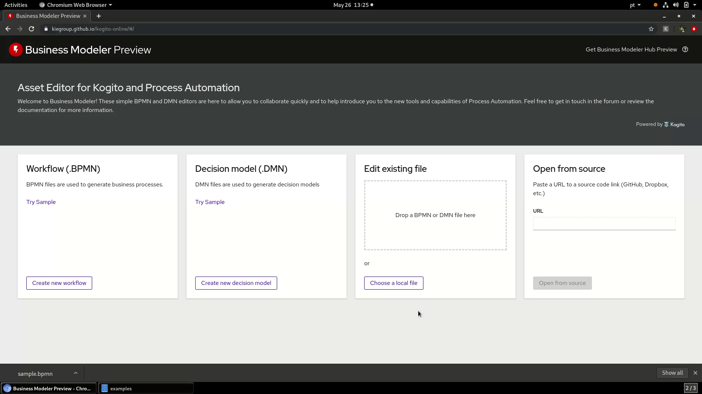
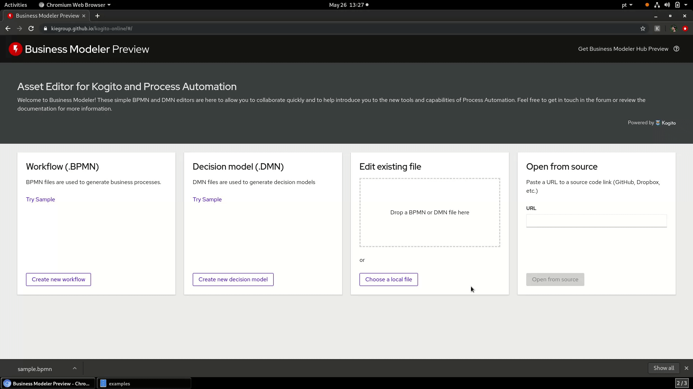

Business Modeler Preview Enhancements
On the latest Kogito Tooling releases, we introduced some awesome UX tweaks on our Business Modeler and we expect it will improve even more your experience using it. We hope you like it. :)
Validations on uploaded files
We included file type validations on the drag and drop area and also on the file upload button:


Improvements on opening a file from URL
The “open from a URL” has been improved as well. More validations were added before the file is opened. The button is disabled until a valid file URL is placed. If a ‘Not Found URL’ or if the content is not available due to CORS is disabled by the provider server, a proper error message is displayed.


We also added a new feature to be able to open a GitHub Gist URL (read more about the possibility to export your work as Gist!)

Download Business Modeler Hub Preview
Now it’s possible to download the Business Modeler Hub Preview for all OS. The Business Modeler Hub Preview is a new application that centralizes all our tools, helping you to find what is more suitable for your needs. Read more about it here.

We hope that with these enhancements we are able to improve our UX on the Business Modeler.
Thanks for reading!